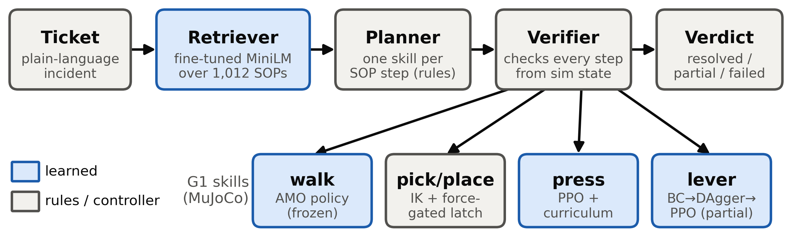
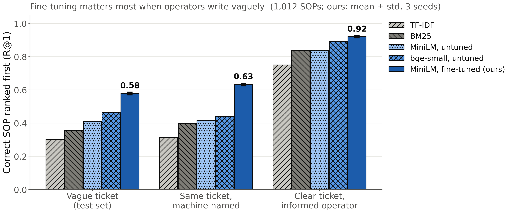

Sequent: SOP-Driven, Physics-Verified Loco-Manipulation on a Simulated Humanoid
The University of Texas at Austin
Abstract
Sequent maps a plant-floor incident ticket to one of 1,012 Standard Operating Procedures (SOPs) and executes the SOP's steps on a simulated Unitree G1 in MuJoCo. A verifier checks each step's postcondition from simulator state. The retriever, all-MiniLM-L6-v2 fine-tuned with a contrastive loss, reaches R@1 0.577 on held-out operator tickets, against 0.357 for BM25 and 0.409 for the same model untuned, and keeps most of the gain on SOPs and equipment families held out from training. Walking uses the AMO controller and picking uses inverse kinematics with a force-gated latch. The two RL skills are partial: the button-press policy re-presses for reward and is stopped after the first held press, and the lever policy completes the throw in 1 of 2 episodes.
Method

System overview. The retriever (learned) selects an SOP, the planner (rules) maps each step to a skill, and the verifier checks each skill's pre- and postconditions from simulator state. Blue: learned components.
Retrieval
The benchmark has 1,012 synthetic SOPs in 46 equipment families (22 per family) and 2,338 incidents written as operators describe symptoms. The retriever is all-MiniLM-L6-v2 (22.7M parameters), fine-tuned on 1,859 incident–SOP pairs.
(BM25 0.36, untuned 0.41)
(untuned 0.47 / 0.42)
from SOP titles

R@1 over the 1,012-SOP index for three ticket sets: held-out test tickets, the same tickets with the machine named, and 92 tickets written by the author from SOP titles. Fine-tuned bars: mean ± std over 3 seeds. Most errors select an SOP for a different machine.
Skills
Pick: inverse kinematics to the box; the gripper latches only when both pads measure contact force. 11 of 12 held lifts.
Press: PPO with a reach curriculum, from the rest pose (about 19 cm). The policy also re-presses for reward; the run is stopped after the first 0.6 s hold.
Lever: behavior cloning, one DAgger pass, then PPO. 1 of 2 deterministic episodes complete the throw. The policy does not observe a per-episode reach offset.
A held-out ticket through retrieval and planning; the robot walks to the panel and presses. Non-embodied steps (wait, read, notify) are shown as text.
Full run
Full run, take 3 of 3. The SOP was written for this demo, and TF-IDF also ranks it first, so this is not evidence of retrieval accuracy. In this take the place drifts, the press misses, and the lever returns; the verifier reports each as failed. Best of the three takes:
| Step | Measured outcome | Verdict |
|---|---|---|
| pick | box gripped, lifted, held | ✓ pass |
| carry / place | carried to the panel, placed upright | ✓ pass |
| press | 33.8 mm press, held (run stopped after the first hold) | ✓ pass |
| lever | reached 0.443 rad; success needs under 0.25 rad (best of 4 stance variants) | ✗ fail |
| notify | verdict card sent: “PARTIALLY RESOLVED” | ✓ pass |
Failure cases
RL grasp, 1.5M steps. The reward paid for height; the tool is thrown upward rather than lifted.
Found by inspecting rendered rollouts:
- Parking: proximity reward near the button; the policy stops 5 cm short.
- Pumping: per-step reward for press depth; the policy presses repeatedly. Not fixed; the episode is stopped after a 0.6 s hold.
- Seat farming: linear progress reward on the lever; the policy holds within the first 0.17 rad of free travel.
- Air-swinging: after press-once termination was added, the arm kept moving during the hold count.
- Ballistic pop: RL grasp on the gripper humanoid, 0% verified; logged lifts were the box ejected from the grip. Replaced by an IK controller.
RL grasp run v5.2. The hand stops next to the tool for the whole episode while the reward stays high.
RL grasp run v5.5 (earlier rig): 55% verified grasps, reached with an overhead arm swing. Played at 0.5x.
Limitations and next steps
- Simulation only, MuJoCo. Next: teleoperated data collection in a simulated factory (Isaac Lab), then on hardware; train on the demonstrations and fine-tune with RL. This work moves to the Unitree R1.
- Synthetic corpus from one generator; there is no evaluation on real maintenance tickets yet.
- The retriever always acts on its closest SOP. Next: refuse or ask “which machine?” when the top match is weak or nearly tied, and filter by the machine ID a real ticket carries.
- The lever is partial (about 1 in 2); the fix, adding the reach offset to the observation, is designed but not trained.
BibTeX
@misc{sikka2026sequent,
author = {Jatin Sikka},
title = {Sequent: SOP-Driven, Physics-Verified Loco-Manipulation on a Simulated Humanoid},
year = {2026},
url = {https://jatinsikka.github.io/sequent-g1/}
}